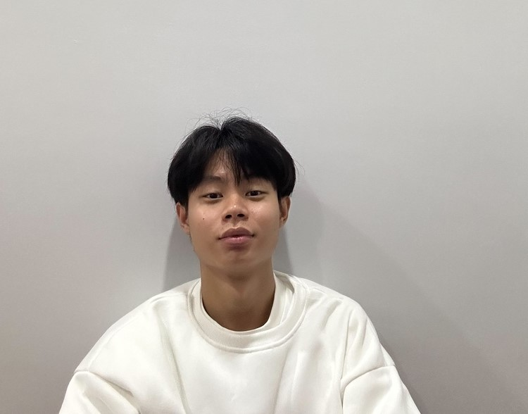

ชื่อเล่น: ท็อป
สาขาวิชา: สาขาวิชาเทคโนโลยีดิจิทัลและสารสนเทศ DIT
กลุ่มเรียน: G1
ผมอยากรู้วิธีการพัฒนาเว็บทั้งส่วนหน้าที่ผู้ใช้เห็น และส่วนหลังที่เป็นการทำงานของระบบ เพื่อให้สามารถสร้างเว็บไซต์ได้ครับ
ผมหวังว่าจะได้เรียนรู้ทุกขั้นตอนของการทำเว็บ ได้พัฒนาการเขียนโค้ดและความเข้าใจในระบบการทำงานของเว็บไซต์และสามารถเอาความรู้นี้ไปใช้ทำเว็บเองได้จริงครับ
ผมรู้สึกว่าจุดอ่อนหลัก ๆ ของผมคือการจัดการแก้ไขโค้ดที่ซับซ้อนหรือยาก ๆ บางครั้งผมรู้สึกว่ายากในการแก้ปัญหาที่มีหลายขั้นตอน หรือเมื่อโค้ดมีข้อผิดพลาดที่ต้องใช้เวลานานในการหาสาเหตุและแก้ไข แนวทางเพื่อพัฒนาทักษะในด้านนี้ ผมตั้งใจจะฝึกแก้ปัญหาโค้ดที่ซับซ้อนมากขึ้น
เว็บไซต์ที่ผมชื่นชอบและได้รับแรงบันดาลใจคือ YouTube